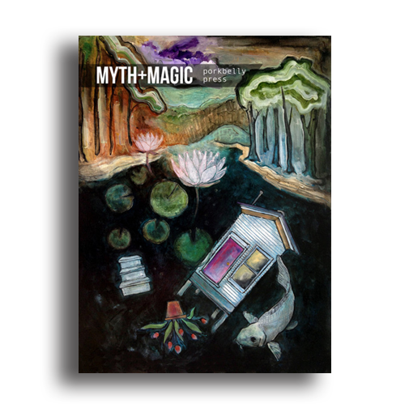

Myth + Magic: A Review
by Christopher Morgan Founded in 2014 by Nicci Mechler, Porkbelly Press is a queer-friendly, feminist press focused on producing limited and small edition, handbound chapbooks. Having already released a few pocket-sized anthologies (inspired by such themes as Emily Dickinson’s life + the art of letters), the press has recently released its fourth compilation, “Myth+Magic,” which features poetry and prose exploring “folk tale, fable, fairy tale, gods, monsters, myth, magic, tricksters, divination, witchcraft, and herbalism.” Adorned with gorgeous cover art, “under water,” by Angie Reed Garner, this collection charms our senses and expectations, providing a glimpse into a buried, fantastical warning.
Each of the seven poets in this collection refuse simple retellings, such as in Andrea Blythe’s opening poem, “Red Riding Hood Remembers,” which reexamines the supposed facts of the classic tale—“how she had / not once, not once, ever asked to be saved” (9). Likewise, M. Brett Gaffney’s fable quickly immerses readers in the life of a young hunter as she learns something unexpected of the real world:
Further instilling freshness into familiar tales, Laura Bylenok’s two poems, “Rape of Electra” and “Caiman,” drive the reader through dark scenes of sacrifice, rebirth, and divided waters. Throughout these pieces we find the natural world, always sharp and present, as Suzanna Anderson shares a haiku about a wound-licking lilac, or Monica Rico ponders heartbeats and humidity, “the predictable / human body / easily missed” (17), suffocating flowers, and baby snapping turtles. But these poets are also our guides, as Lisa Megraw’s first poem reveals a witchy path to “a mythical / place hidden between worlds” (25) in “How to Take the Raven as Your Birth Sign,” with advice such as: “Peel the shadows off migrating birds / then under covers of darkness / slip inside their bruised / emptiness” (24). In further poems of instruction, Sarah Ann Winn’s whimsical “How to Fold a Dream” has the reader stack mockingbirds inside of themselves, packing away Venus and constellations to craft a stowaway dream you can examine from your pocket.
Succinct and controlled, the three prose pieces in “Myth+Magic” paint encounters between humans and the supernatural. “Hamadryad” by Lucas Olson details grim irony as a spirit of the woods finds her sister’s former tree-self returned as a weapon, wielded by a weeping man. Indeed, “there is never any life in an axe” (12), as tragedy can only end one way. And halfway through the anthology, Marlana Patton’s “Juliet” is a surprisingly moving tale where an enormous spider’s infatuation with a farmer offers the only possibility of her surviving the freezing winter: “Only a few days ago he caught a small jumping spider very near the shed. She saw delight in his face as he watched it spring from one hand to the other. He could understand this” (22-23). Closing the anthology is “The Lemon Seed” by Leah Browning, where a girl swallows a lemon seed daily, hoping for it to grow—only to find her wish suddenly, rapidly fulfilled.
“Myth+Magic” shows us how beauty and danger can often occupy and captivate within the same space—which makes what comes next all the more unreal. Rejecting the ordinary with every line, the writers in this anthology not only engage their readers with imaginative details, but also use these same concise worlds to introduce the everyday hardships of love, surprise, and sorrow.
Find “Myth+Magic” from Porkbelly Press’s bookstore here (while supplies last). Or get it as part of the “Any 5 for 35” bundle deal, which I highly recommend (found here).
Stay tuned for “Sky+Sea,” an upcoming anthology Mechler says will showcase “work inspired by the stars, planets, moon, skies, and the depths of the sea”—submissions begin in early 2016!
Porkbelly Press can be found on Facebook, Twitter, and Etsy.
Review by Christopher Morgan